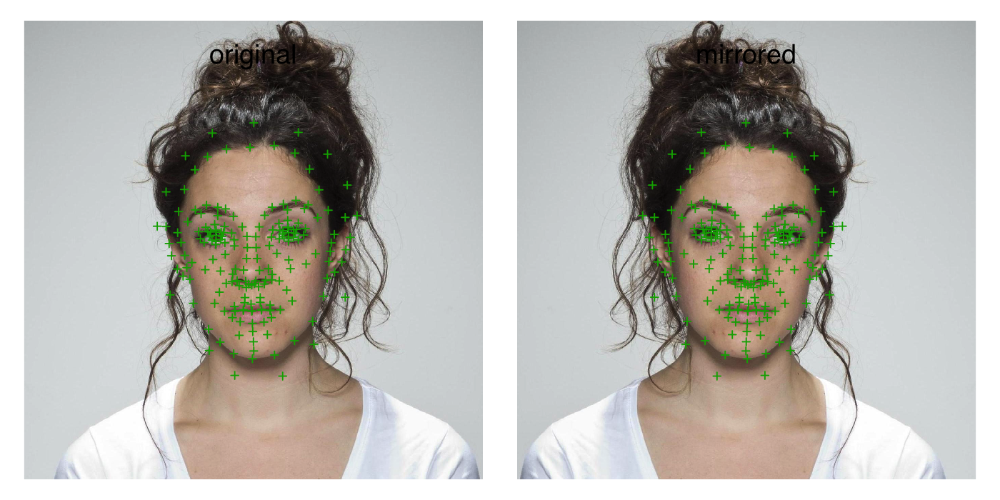

Use the function frl_sym() to get the sym_map for the standard webmorph template. If sym_map is omitted, images and templates will be fully reversed (e.g., if point 1 is the left eye in the original image, it will be the right eye in the mirrored image).
mirror(stimlist, sym_map = NULL, axis = "vertical")
| stimlist | list of class webmorph_list |
|---|---|
| sym_map | list of corresponding template points |
| axis | vertical or horizontal axis of mirroring |
webmorph_list with mirrored images and tems
o <- faces("london", "001_03") m <- mirror(o, frl_sym()) c(o, m) %>% plot(pt.plot = TRUE, labels = c("original", "mirrored"))